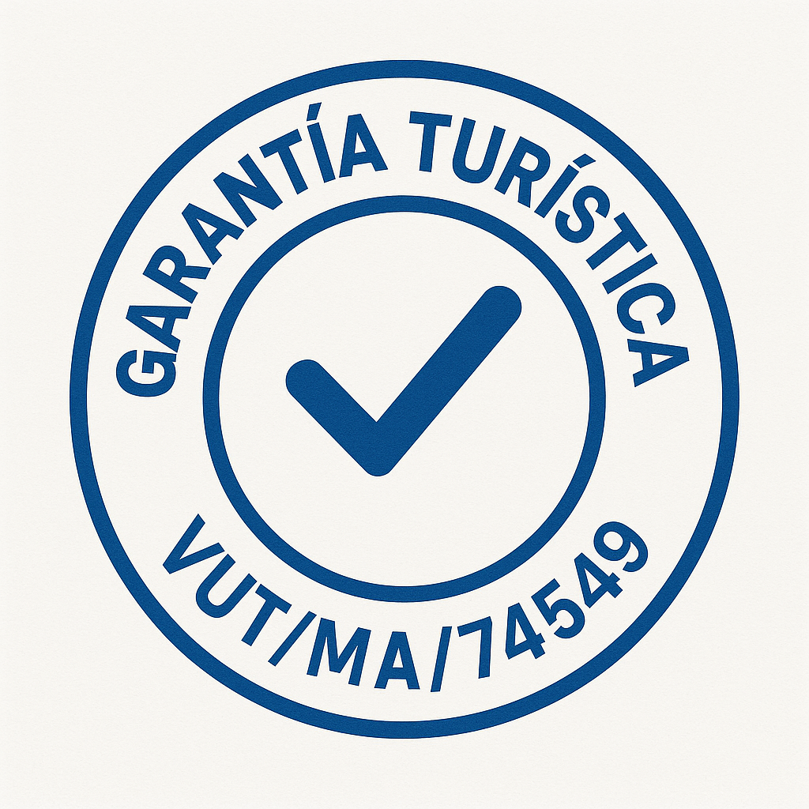

Bienvenidos al Apartamento Turístico Bahamas

Ubicación privilegiada
Apartamento muy bien ubicado, a 7 min del Faro de Torre del Mar y totalmente equipado. Cerca de la playa, piscina, pista de tenis y todos los comercios esenciales muy cerca.
Comodidades del apartamento
- 1 dormitorio-salón con cama de matrimonio y sofá cama.
- Armarios zapatero.
- Baño completo con ducha.
- Orientación oeste y sol de tarde.
- Cocina integrada en salón totalmente equipada, con lavavajillas.
- Smart-TV, WiFi, aire acondicionado/calefacción.
- Lavadora-secadora y termo eléctrico.
- Dispone de Licencia turistica.

Zona de piscinas
Amplia piscina comunitaria para adultos y niños, abierta desde mediados de Junio a mediados de Septiembre y dentro de un recinto privado.
Entorno y servicios cercanos
- A 180 metros de la playa (menos de 7 minutos a pie)
- A 440 metros del centro (Paseo Larios)
- Cerca de tiendas, restaurantes, bares,bazares, estacion de autobuses y taxis,supermercados, farmacias, instalaciones deportivas y mucho más.
Actividades y ocio
- Lectura en la biblioteca municipal a 2 min a pie.
- Biblioplaya con libros y juegos a 13 min andando.
- Zonas deportivas municipales junto a la playa
Información adicional
- Capacidad máxima: 4 personas en verano.
- Ideal para parejas fuera de la temporada estival.
- No se admiten mascotas.
- No se permite fumar.
- No se alquila por larga temporada ni durante el curso escolar.
Para más información consulta nuestras reseñas y disponibilidad en Airbnb y Vrbo. Tambien puedes consultar oferta de nuestro segundo apartamento turístico, accediendo al enlace de la foto, ubicado en la misma zona.También puedes contactar por WhatsApp o email para cualquier duda.


¡¡Torre del Mar todo el año, ven y disfruta!!